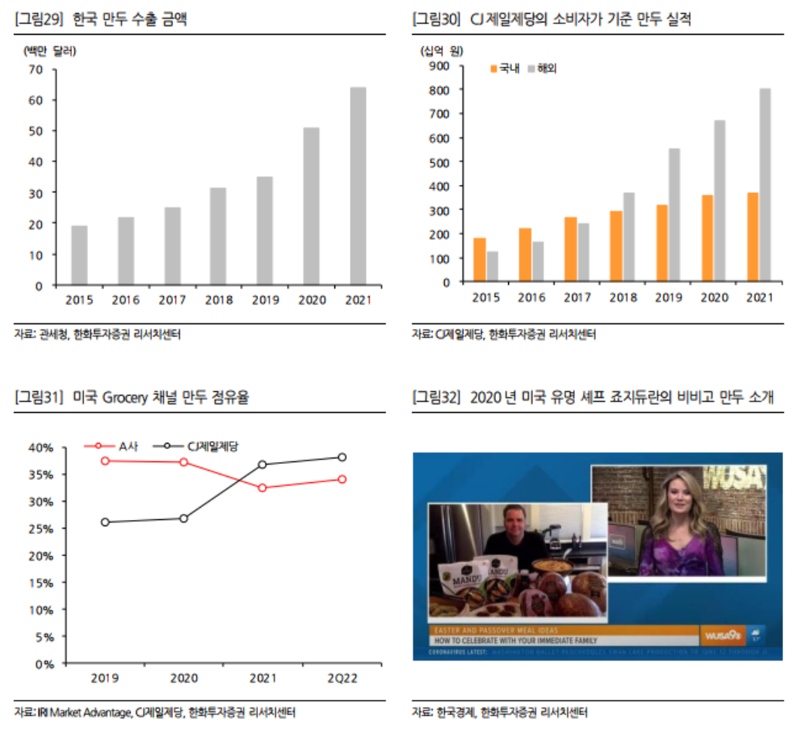

라면
인스턴트 누들로 대변되는 라면 시장이 2016년 이후 단 한번의 역신장 없이 꾸준한 증가세를 보이고 있다.
2015년까지만 하더라도 한국 라면이 수출 되는 국가는 70여개 수준이었으나 2021년에는 91개까지 확대되었다.
한국 라면 수요 확대로 기진출국 내에서의 점유율 확대, 신규 진출국가 확대로 한국 라면 수출의 우상향 기조는 지속될 전망이다.

인스턴트 누들로 대변되는 라면 시장이 2016년 이후 단 한번의 역신장 없이 꾸준한 증가세를 보이고 있다.
2015년까지만 하더라도 한국 라면이 수출 되는 국가는 70여개 수준이었으나 2021년에는 91개까지 확대되었다.
한국 라면 수요 확대로 기진출국 내에서의 점유율 확대, 신규 진출국가 확대로 한국 라면 수출의 우상향 기조는 지속될 전망이다.
CJ제일제당의 경우 2018년 해외 만두 매출액이 국내 만두 매출액을 앞지르기 시작했다.
해외 만두 매출액 중 미국 비중은 60%를 초과한다. CJ제일제당은 미국에서 섬세한 현지화 전략과 공격적인 마케팅으로 2021년에는 Grocery 채널 만두 점유율 1위를 달성했다.
FS(B2B) 판매 확대, Grocery 내 입점률(2020년 54% -> 2025년 목표 75%)확대를 통해 2위 업체와의 격차는 더욱 확대될 전망이다.
